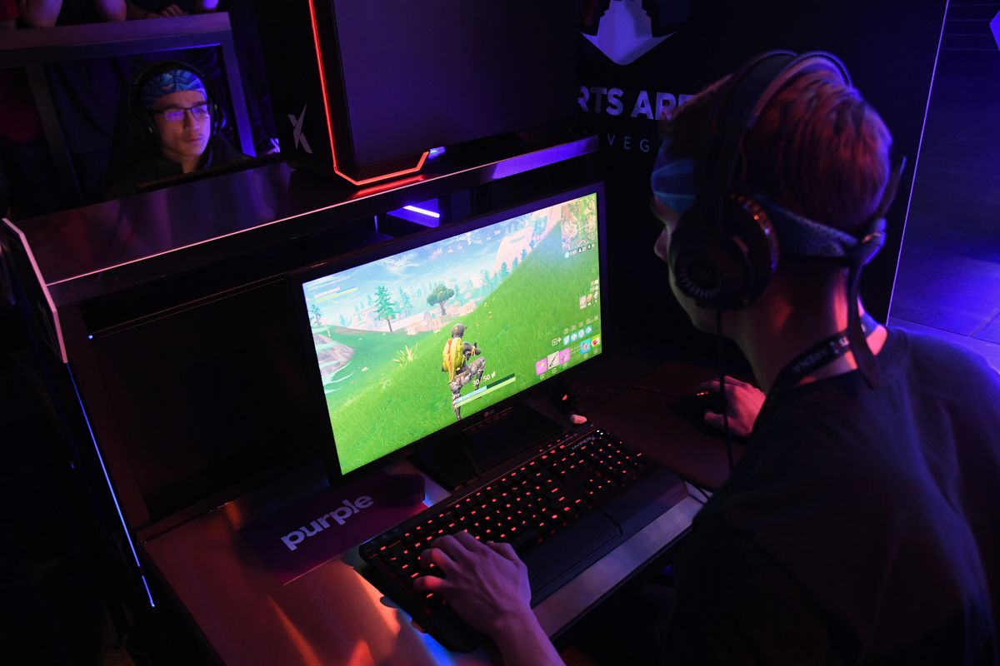

Advantages and disavantages of online games.

Online gaming is so popular because people enjoy playing games and have a need for
social interaction. Online games bridge this gap and therefore people love them. Even
thought they are so popular they don’t come with out drawbacks. Alot of online games
require players to spend hunders of hours playing to be able to fully enjoy these games.
People who do spend this time playing games aren’t able to go out and meet with people
face to face and thus this causes a declination in social skills, sometimes completely
destroying peoples social life in extreme cases.
The Internet has been a gaming medium for almost as long as it has existed,
as early users quickly adapted email and newsgroup technology to create online
versions of classic board games or roleplaying games. Since the early 2000s,
the growth of broadband Internet has brought new generations of gamers online;
in fact, you can't play some modern games such as Titanfall offline at all. While
there are a lot of advantages to online gaming, it does have a seedy underbelly.
Gaming with Friends
More than anything else, online games have brought players together, forging people
with a shared interest into a community. Whether cooperative or competitive, online
gaming makes it much easier for gamers to play with their friends or make new ones.
Guildmates can play together in an online role-playing game or sports rivals test
their skills even though they live thousands of miles apart. Friendships can develop
in online games between people who would never have met otherwise. Recent research
even shows that children who play online games are more likely to develop positive
attitudes toward people from other countries and cultures.
Bad Behavior
This doesn't mean that online society is all sweetness and positive attitudes:
anonymity, a tense competitive environment and a low barrier to entry can encourage
bad behavior among some players, including both disruptive gameplay such as griefing
and abusive or intimidating out-of-game messages. In some extreme cases, this can
include bullying or threats. Game makers and community moderators do their best to
limit this kind of behavior, but it still plagues some online communities. Luckily,
most games offer a way to ignore or mute other players if you are encountering a
barrage of insults.
Whole New Genres
Online gaming has enabled group play on a never-before-seen scale, spawning whole
new genres; the immersive worlds of MMORPGs and the endless creativity of open-world
games would never have been possible without online gaming. The first MMORPGs
developed from older RPGs in the 1990s and really took off once home broadband
connections began to become common. While some early online games were afterthoughts
bolted onto single-player games, the online multiplayer game is now an important
genre of its own.
Connection Problems
Modern online gaming is usually a very smooth experience, but the technology still
has its limits. Small delays in internet connections can result in "lag," a delay
between when you press a button and the action occurs in the game. In input-sensitive
games like first-person shooters or fighting games, this small delay is the difference
between victory and defeat.
Cost
Internet connection charges can quickly add up when playing online: Gamers whose ISPs
impose data caps may find themselves using up their bandwidth quickly. Players may
also have to pay monthly for online accounts or spend money per item on in-game
purchases, and the costs can add up quickly for unsuspecting players.
Competitive Communities
Competitive gamers are among the biggest beneficiaries of online gaming. Previously,
most players' knowledge of the competitive scene was limited to a local group such as
an arcade or a university gaming club. Online gaming -- aided by other online tools
such as Twitch and YouTube -- has made it possible for competitive players to share
strategies and analyze gameplay like never before, raising the standard of play to a
new level and creating an entirely new industry of professional competitive gaming.
However, there is a downside to this boom, as new players can often find the high level
of play demanded by competitive gamers intimidating, and may not even attempt to play
online.
 The Game Journal
The Game Journal